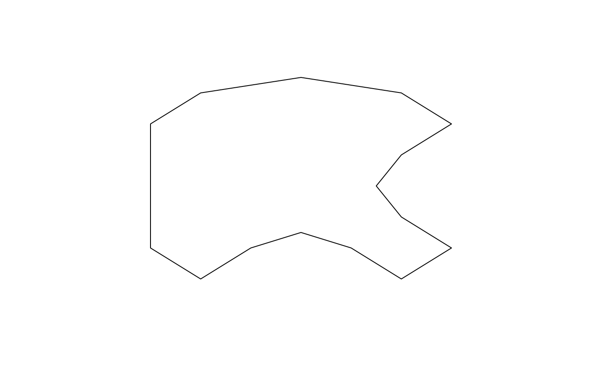
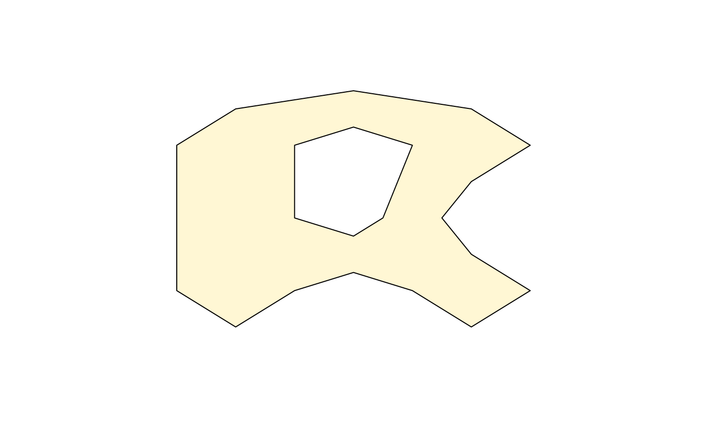
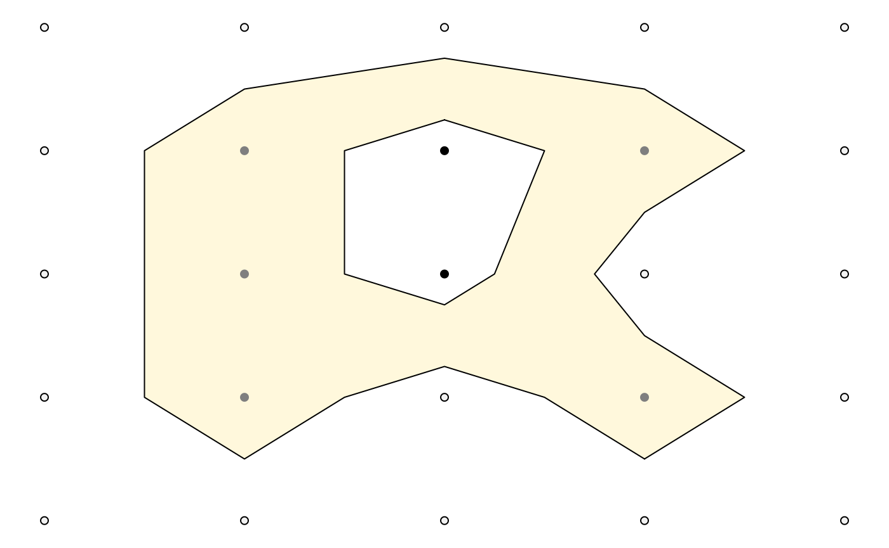
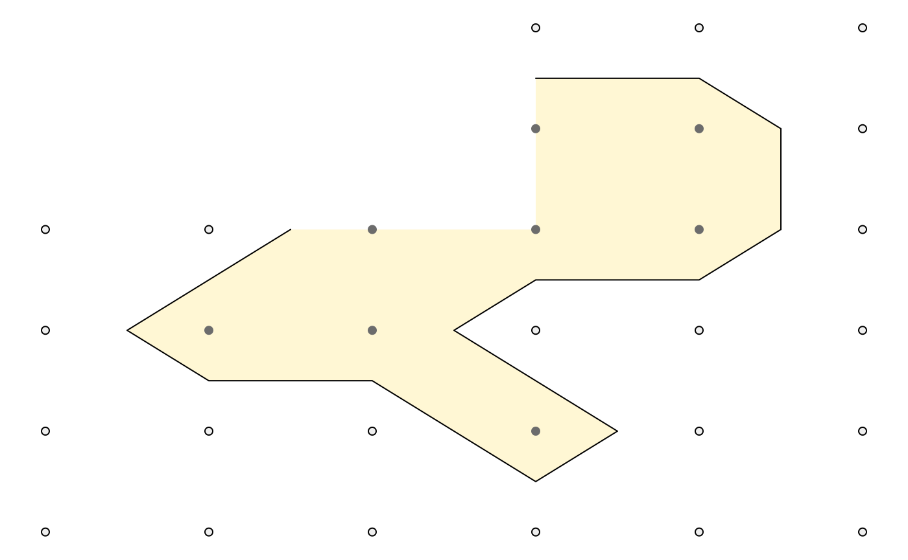
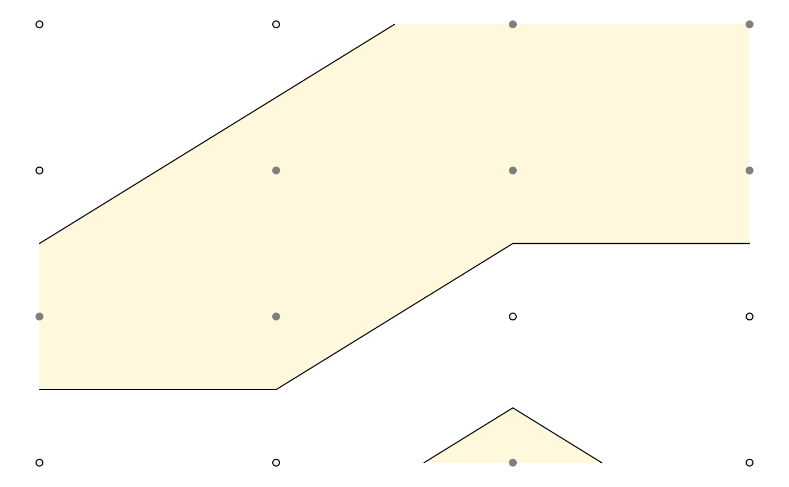

vignettes/isoband1.Rmd
isoband1.RmdThe isoband package implements fast algorithms for generating isolines (lines of equal elevation) and isobands (ranges of elevation delimited by two isolines) from a matrix of elevation data. For both cases, the package employs the marching squares algorithms as described on Wikipedia. Marching squares algorithms break down the elevation matrix into blocks of 2x2 elevation values. For each block, they then determine the appropriate isolines/isobands from a lookup table of all possible arrangements of isolines or isobands within a 2x2 block. There are 16 distinct possibilities for isolines and 81 for isobands. The implementation in the isoband package goes beyond the algorithm described on Wikipedia in that it merges the isolines or isobands from separate blocks into extended line traces or polygons. The package is meant as a low-level package with minimal required dependencies. Therefore, many of the functions provided may not immediately be useful to endusers, but they will enable developers of other packages to integrate isolines and isobands into their feature set.
The two main functions of the package are called isolines() and isobands(), and they have similar user interfaces and return values. Both take a vector x specifying the x values corresponding to the columns of the elevation matrix, a vector y specifying the y values corresponding to the rows of the elevation matrix, and an elevation matrix z. The two functions differ in that isolines() takes a single argument levels specifying the elevation levels for which isolines should be calculated, whereas isobands() takes two arguments, levels_low and levels_high, specifying the lower and upper bounds for each isoband. The return value in both cases is a list of lists. The outer list contains one list element for each specified isolevel. The inner lists hold line or polygon data in the form x, y, id as used by grid::polylineGrob() or grid::pathGrob(). The format has been chosing for easy drawing of the resulting values via these two grid functions.
library(isoband)
library(grid)
m <- matrix(
c(0, 0, 0, 0, 0,
0, 1, 2, 1, 0,
0, 1, 2, 0, 0,
0, 1, 0, 1, 0,
0, 0, 0, 0, 0),
5, 5, byrow = TRUE
)
lines <- isolines(x = 1:ncol(m)/6, y = nrow(m):1/6, z = m, levels = 0.5)
lines
#> $`0.5`
#> $`0.5`$x
#> [1] 0.6666667 0.5833333 0.5000000 0.4166667 0.3333333 0.2500000 0.2500000
#> [8] 0.2500000 0.3333333 0.5000000 0.6666667 0.7500000 0.6666667 0.6250000
#> [15] 0.6666667 0.7500000 0.6666667
#>
#> $`0.5`$y
#> [1] 0.2500000 0.3333333 0.3750000 0.3333333 0.2500000 0.3333333 0.5000000
#> [8] 0.6666667 0.7500000 0.7916667 0.7500000 0.6666667 0.5833333 0.5000000
#> [15] 0.4166667 0.3333333 0.2500000
#>
#> $`0.5`$id
#> [1] 1 1 1 1 1 1 1 1 1 1 1 1 1 1 1 1 1
#>
#>
#> attr(,"class")
#> [1] "isolines" "iso"
grid.newpage()
grid.draw(polylineGrob(lines[[1]]$x, lines[[1]]$y, lines[[1]]$id))
bands <- isobands(x = 1:ncol(m)/6, y = nrow(m):1/6, z = m, levels_low = 0.5, levels_high = 1.5)
bands
#> $`0.5:1.5`
#> $`0.5:1.5`$x
#> [1] 0.4166667 0.3333333 0.2500000 0.2500000 0.2500000 0.3333333 0.5000000
#> [8] 0.6666667 0.7500000 0.6666667 0.6250000 0.6666667 0.7500000 0.6666667
#> [15] 0.5833333 0.5000000 0.5000000 0.5416667 0.5833333 0.5000000 0.4166667
#> [22] 0.4166667
#>
#> $`0.5:1.5`$y
#> [1] 0.3333333 0.2500000 0.3333333 0.5000000 0.6666667 0.7500000 0.7916667
#> [8] 0.7500000 0.6666667 0.5833333 0.5000000 0.4166667 0.3333333 0.2500000
#> [15] 0.3333333 0.3750000 0.4583333 0.5000000 0.6666667 0.7083333 0.6666667
#> [22] 0.5000000
#>
#> $`0.5:1.5`$id
#> [1] 1 1 1 1 1 1 1 1 1 1 1 1 1 1 1 1 2 2 2 2 2 2
#>
#>
#> attr(,"class")
#> [1] "isobands" "iso"
grid.newpage()
grid.draw(pathGrob(bands[[1]]$x, bands[[1]]$y, bands[[1]]$id, gp = gpar(fill = "cornsilk")))
A convenience function plot_iso() can be used to inspect a single isoband and corresponding isolines for an elevation matrix. This function is mostly meant for debugging and illustration purposes. It draws a grid of matrix points colored by whether each point is below, within, or above the isoband, as well as the isoband itself and the enclosing isolines.

The isoband package handles NA values in the matrix by simply ignoring the respective grid points.
m <- matrix(
c(NA, NA, NA, 0, 0, 0,
NA, NA, NA, 1, 1, 0,
0, 0, 1, 1, 1, 0,
0, 1, 1, 0, 0, 0,
0, 0, 0, 1, 0, 0,
0, 0, 0, 0, 0, 0),
6, 6, byrow = TRUE
)
plot_iso(m, 0.5, 1.5)
Isobands can contain holes, as shown above, and they can also consist of multiple disconnected pieces.
m <- matrix(
c(0, 0, 1, 1,
0, 1, 1, 1,
1, 1, 0, 0,
0, 0, 0.8, 0),
4, 4, byrow = TRUE
)
plot_iso(m, 0.5, 1.5)
The code is written in C++ and performance is generally good. Isolining is about as fast as grDevices::contourLines(), isobanding is approximately 2.5 times slower.
# contouring with contourLines() from grDevices
fn_contourLines <- function() {
grDevices::contourLines(1:ncol(volcano), 1:nrow(volcano), volcano, levels = 10*(10:18))
}
# contouring with isolines()
fn_isolines <- function() {
isolines(1:ncol(volcano), 1:nrow(volcano), volcano, 10*(10:18))
}
# contouring with isobands()
fn_isobands <- function() {
isobands(1:ncol(volcano), 1:nrow(volcano), volcano, 10*(9:17), 10*(10:18))
}
microbenchmark::microbenchmark(fn_contourLines(), fn_isolines(), fn_isobands())
#> Unit: milliseconds
#> expr min lq mean median uq max neval
#> fn_contourLines() 1.445002 1.677471 2.333852 1.788102 2.349495 19.311984 100
#> fn_isolines() 1.428188 1.514652 1.757165 1.625993 1.768556 7.874367 100
#> fn_isobands() 3.576574 3.778846 4.129721 3.978789 4.213070 10.792447 100
#> cld
#> b
#> a
#> c